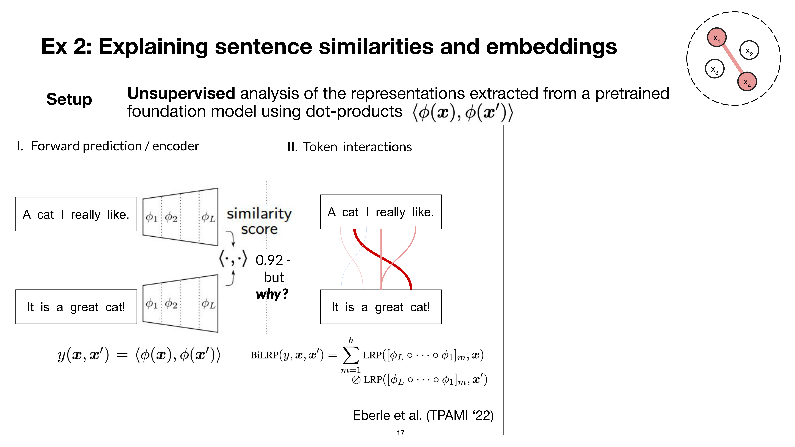
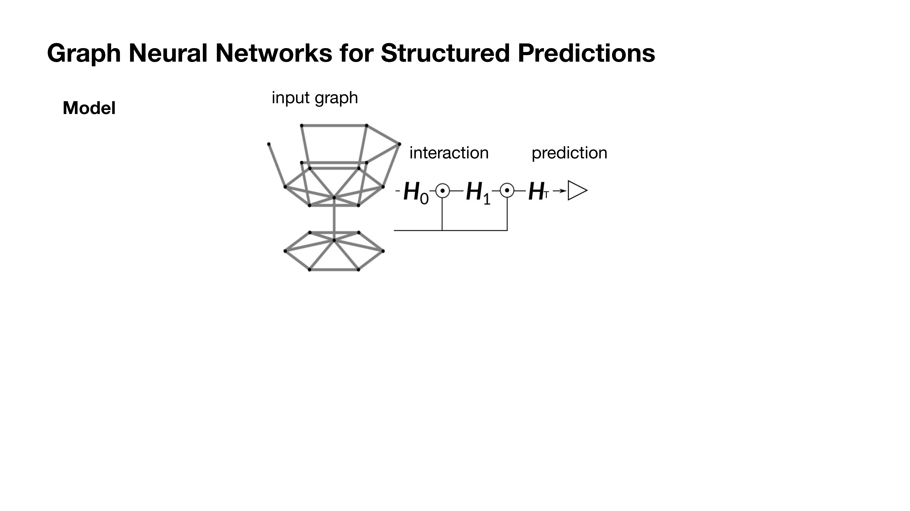
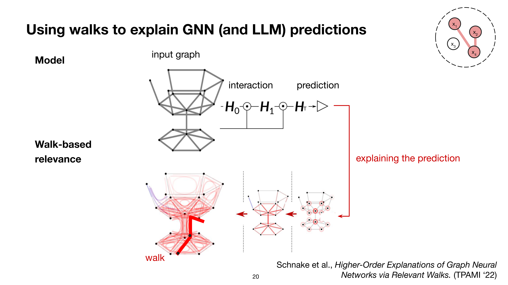
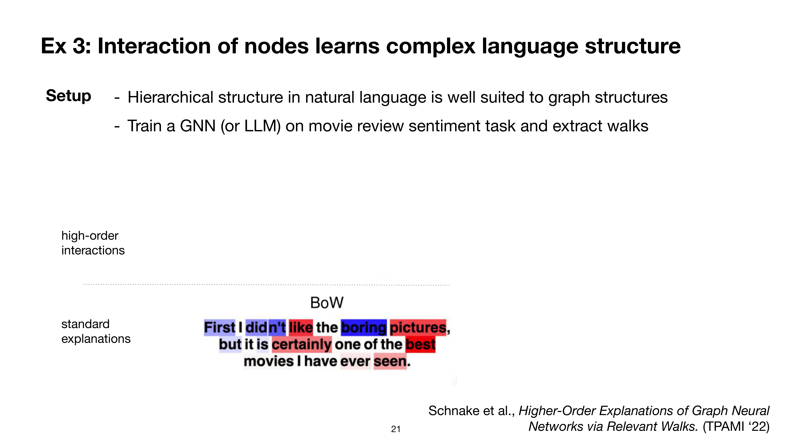
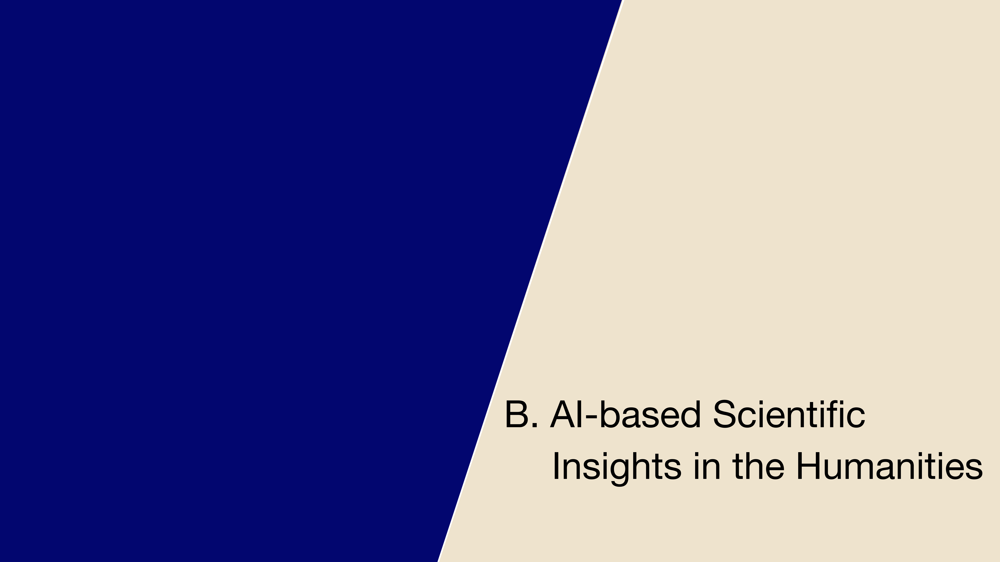
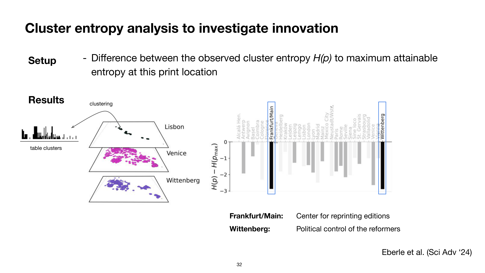

7 Explainable AI and AI-based Scientific Insights in the Humanities
Overview
Dr Oliver Eberle, a postdoctoral senior researcher at the Berlin Institute for Learning and Data, offers a comprehensive overview of his work at the intersection of machine learning and the digital humanities. Drawing from his deep background in machine learning, he has forged a path into the humanities through vital collaborations with historians. His research centres on the interpretability of Large Language Models (LLMs) and the broader field of Explainable Artificial Intelligence (XAI).
The presentation systematically addresses two principal areas. Firstly, it establishes a foundational understanding of AI, particularly LLMs, and explores the imperative for their transparency and comprehensibility. Secondly, it demonstrates the practical application of AI methodologies to generate novel scientific insights within humanities disciplines, revealing how such tools can uncover new patterns, connections, and interpretations in fields like history and literature.
7.1 A Dual Focus: Explainable AI and AI in the Humanities

This work establishes a dual focus, addressing two principal areas in a systematic fashion. The first area of inquiry delves into Explainable Artificial Intelligence (XAI) and the critical need to understand Large Language Models (LLMs). This segment explores the interpretability, functionality, and transparency of AI systems, specifically tackling the challenge of comprehending the reasoning and decision-making mechanisms within these complex models.
The discussion then shifts to the generation of AI-based scientific insights within the humanities. Here, the focus is on applying artificial intelligence methodologies to produce novel research findings. The aim is to uncover new patterns, connections, and interpretations within disciplines such as history, literature, and philosophy, thereby making a significant contribution to scholarly understanding in these fields.
7.2 Introducing Explainable AI: The First Wave

The discourse transitions to an introduction of Explainable AI 1.0, with a specific focus on feature attributions. This foundational concept in XAI involves determining the importance or contribution of individual input features to a model’s prediction. By doing so, it enhances the transparency of the model’s decision-making process. Dr Eberle provides a concise overview, defining XAI from the perspective of the machine learning community.
7.3 The Black Box Problem and the Need for Explainability

Historically, machine learning concentrated primarily on visual data; a significant shift towards language-based applications has only emerged in the last decade. To address the inherent opacity of these ‘black box’ models, the machine learning community developed Explainable Artificial Intelligence (XAI). For instance, whilst a model might accurately identify a rooster from an image, users typically lack insight into the basis of this prediction. Consequently, a decade of XAI research has been dedicated to understanding and tracing the origins of such predictions.
A common XAI technique involves generating heatmaps, which visually indicate the specific pixels responsible for a classification, thereby clarifying why a model recognised the rooster. Beyond mere technical transparency, the motivations for XAI are multifaceted. As Samek and colleagues (2017) outline, these include:
Verifying that predictions are reasonable.
Facilitating the correction of errors by illuminating how they occur.
Aiding the understanding of the underlying problem, as models can uncover surprising solutions.
Ensuring compliance with evolving regulations, such as the European AI Act.
7.4 Post-Hoc Explainability and Its Motivations

Post-hoc explainability concentrates on interpreting AI decisions after they have been generated. This process typically involves feeding an input, such as an image of a rooster, into a black box AI system, which in turn yields a prediction. To elucidate this prediction, specific explanation methods interact with the system to produce a heatmap.
When overlaid onto the original input, this heatmap visually highlights the pixels most influential in the AI’s decision—for instance, concentrating on the rooster’s head. This methodology, consistent with the framework of Samek et al. (2017), provides crucial insights into the AI’s reasoning. The imperative for such explainability stems from the need to verify predictions, identify flaws and biases, learn more about the underlying problem, and ensure compliance with legislation.
7.5 Generative AI and New Interpretability Challenges

The field of artificial intelligence has undergone a significant paradigm shift, moving from traditional classification models to the era of Generative AI. Whilst older systems primarily performed discrete tasks such as classifying an input image, contemporary generative models exhibit a far broader range of capabilities. These advanced systems can classify, identify similar images, generate novel content, and engage in comprehensive question-and-answer interactions across diverse topics.
Consequently, grounding a prediction or an answer from a Large Language Model (LLM) in its specific input has become considerably more challenging. The field now requires interpretability methods that extend beyond simple heatmap representations, focusing instead on intricate feature interactions and a more mechanistic understanding of the models’ internal workings. Today’s foundation models function not merely as specialised classifiers but as multi-task ‘world models’, offering profound insights into societal evolution, textual dynamics, and the inherent features of language itself. This evolution necessitates advanced techniques to fully comprehend their complex outputs.
7.6 Illustrative Model Failures

AI models, including advanced LLMs, demonstrably make surprising mistakes. In object detection, for example, Lapuschkin and colleagues (Nat Commun ’19) showed that a standard classifier might erroneously base its prediction of a boat on the surrounding water rather than the vessel itself, simply because water presents a correlated and texturally simpler feature to detect.
In multi-step planning, contemporary LLMs also exhibit significant limitations. Mondal, Webb, and colleagues (arxiv ’24) tasked a Llama 3.x model with solving the Tower of Hanoi puzzle. The model immediately erred by attempting to move the largest, physically inaccessible disk directly to the final peg. This failure highlights the model’s inability to comprehend the problem’s fundamental physical constraints, underscoring the ongoing challenges in developing truly robust AI systems.
7.7 XAI 2.0: Towards Structured Interpretability

The discussion now pivots to Explainable AI (XAI) 2.0, which focuses on structured interpretability. This advanced approach aims to transcend the limitations of conventional heatmap representations. It seeks to provide more organised, systematic, and hierarchical explanations for AI model behaviour, with the subsequent sections detailing methodologies that achieve this deeper level of insight.
7.8 First-Order Explanations for Verification

The exploration of ‘first-order explanations’ provides a methodology for elucidating the behaviour of classifiers, typically by generating heatmaps over classification outputs. A pertinent case study involved a classifier trained on historical table data, where the objective was to distinguish between specific subgroups of these tables. To verify that the classifier was operating meaningfully, heatmaps were employed to ensure the model’s decisions were grounded in relevant features.
7.9 Features and Pairwise Interactions

To enhance model interpretability, the analysis of relevant features and their interactions is paramount. In a first-order analysis of classifier predictions, a model designed to classify historical tables correctly prioritised numerical content. This focus on numerical data served as an effective proxy for identifying such tables, with heatmaps visually confirming the relevance of these individual features.
Moving to a second-order analysis, the emphasis shifts to pairwise relationships. Here, investigating similarity proved crucial. By computing a dot product between the embeddings of two images, the project team discovered that feature interactions provided an appropriate representation for explaining similarity predictions. This method revealed, for instance, specific interactions between digits that confirmed the identity of two historical tables, thereby verifying the model’s intended functionality.
7.10 Higher-Order Interactions and Circuit-Level Understanding

More recent scholarship has turned to graph structures, discovering that higher-order interactions offer more meaningful insights into model behaviour. When applied to contexts such as citation networks or networks of books and entities, this approach reveals that feature subgraphs or ‘feature walks’—defined as sets of features that collectively become relevant—are particularly significant. Identifying these complex interactions facilitates a deeper, ‘circuit-level’ comprehension of a model’s internal mechanisms.
7.11 First-Order Attributions in Large Language Models

The presentation now transitions to a focused examination of first-order attributions within Large Language Models (LLMs). Through concrete examples drawn from language and the humanities, this segment explores the direct causal links between inputs and outputs in LLMs, elucidating the fundamental mechanisms that underpin their interpretability.
7.12 Biased Sentiment Predictions in Transformer Models

In a study presented at ICML in 2022, Ali and colleagues investigated biased sentiment predictions within Transformer LLMs. Employing first-order attributions in a standard movie review sentiment analysis scenario, their methodology analysed how certain names influenced sentiment predictions. Using heatmaps generated by a novel method for Transformers, they observed a distinct bias: positive sentiment was more frequently associated with male Western names such as Lee, Barry, or Raphael.
Conversely, negative sentiment scores were more probable when names such as Saddam, Castro, or Chan were present. This study clearly identified fine-grained biases, a phenomenon increasingly recognised within the AI community. The work underscores how XAI can prove invaluable for detecting these subtle, yet significant, model biases.
7.13 Long-Range Dependencies in LLMs

In a paper for NeurIPS 2024, Jafari and colleagues investigated first-order attributions to understand long-range dependencies in LLMs. They tasked models with generating summaries from extensive inputs, specifically Wikipedia articles, within an 8,000-token context window. The core inquiry was whether models could effectively utilise information from distant parts of the context.
By analysing the source of the generated text, the team observed that a token such as ‘1972’ was accurately attributed to information located 5,775 tokens earlier in the context. This information originated from passages referencing ‘Bread’s 1972 album Guitar Man’ and a ‘List of number-one adult contemporary singles of 1972 (U.S.)’. This example compellingly demonstrates an LLM’s capacity to leverage long-range dependencies for precise text generation.
7.14 Limitations in Long-Range Summarisation

The work of Jafari and colleagues (NeurIPS ’24) also revealed a crucial operational characteristic of LLMs. Whilst models can draw information from the entire 8,000-token context window, they predominantly prioritise data located in the later parts of the input. A histogram illustrating this tendency shows that although mid-range and long-range dependencies are observed, their frequency diminishes significantly compared to short-range interactions.
Consequently, users employing LLMs for text summarisation should anticipate an unbalanced output. The model is more likely to concentrate on information presented closer to the prompt rather than providing a comprehensive, evenly distributed summary of the entire input text, a key consideration for practical applications.
7.15 Higher-Order Interactions in Text
Building upon prior discussions of embeddings, the presentation now advances to a detailed examination of second and higher-order interactions within textual data. This segment explores complex relationships that extend beyond simple, direct connections, delving into the intricate patterns, contextual dependencies, and emergent properties inherent in language. The methodologies discussed aim to uncover these sophisticated interactions, offering a more nuanced understanding of textual structures.
7.16 Explaining Sentence Similarity with BiLRP

To explain sentence similarities, Eberle and colleagues (TPAMI 2022) conducted an unsupervised analysis of representations from a pretrained foundation model, using dot products as the similarity metric. Whilst a model might yield a high similarity score for sentences like ‘A cat I really like’ and ‘It is a great cat!’, the underlying reasons often remain opaque.
To address this, the team developed the Bilinear Layer-wise Relevance Propagation (BiLRP) method. This technique, formalised by the equation BiLRP(y, x, x') = Σ_{m=1}^{h} LRP([ϕ_L ◦ ... ◦ ϕ_1]_m, x) ⊗ LRP([ϕ_L ◦ ... ◦ ϕ_1]_m, x'), decomposes the similarity score into contributions from individual tokens or token pairs. The resulting interaction scores clarify the model’s reasoning.
Analysis of these token interactions frequently reveals surprisingly simplistic strategies. These include noun matching (both synonyms and identical tokens) and some noun-verb interactions, suggesting that models often rely on a ‘bag of token types’ approach. This finding is crucial for practitioners, as it indicates that the features driving high similarity scores in embeddings may be remarkably simple.

7.17 Graph Neural Networks for Structured Data

The exploration of Graph Neural Networks (GNNs) offers a powerful approach for structured predictions. These models are designed to process graph-structured data, such as complex networks of interconnected nodes and edges. The operational flow of a GNN involves feeding an input graph into a processing pipeline, where an iterative ‘interaction’ phase refines information across the graph through recurrent message-passing.
This process updates node features based on their neighbours, culminating in a final hidden state that yields the model’s prediction. Crucially for interpretability, GNNs enable the derivation of attributions in terms of ‘walks’, which represent specific interactions of features within the graph structure.
7.18 Explaining Predictions with Walks

Schnake and colleagues (TPAMI 2022) developed a conceptual framework for explaining GNN and LLM predictions by leveraging ‘walks’. In their method, a walk-based relevance analysis identifies influential sequences of connected nodes and edges, progressively simplifying the explanation from a full graph to a subgraph of only the most relevant components.
A key insight from their work is that GNNs, which inherently encode structural information, can be framed as LLMs. The attention network within an LLM effectively determines which tokens can engage in ‘message passing’, a process analogous to node interactions in a GNN. This conceptual alignment enables the application of walk-based interpretability methods to language models, offering a powerful tool for understanding their complex behaviours.
7.19 Limitations of Standard Explanations

In an illustrative example, Schnake and colleagues (TPAMI 2022) demonstrated how node interactions facilitate the learning of complex language structures. Their premise is that the hierarchical nature of language is well-suited for graph representations, enabling models to be trained on sentiment tasks to extract meaningful ‘walks’ or linguistic patterns.
However, standard explanation methods like the Bag-of-Words (BoW) approach prove inadequate. For the sentence, ‘First I didn’t like the boring pictures, but it is certainly one of the best movies I have ever seen’, a first-order, BoW-like explanation might incorrectly assign a high positive score to the initial negative clause due to the word ‘like’, failing to interpret the negation. This highlights the critical need for higher-order interaction methods to achieve a more nuanced understanding.
7.20 Higher-Order Explanations for Nuanced Sentiment

Employing their more complex, higher-order explanation methods, Schnake and colleagues demonstrated a significantly improved capacity to interpret nuanced language. For the same example sentence, their advanced techniques accurately assigned a negative score to the entire initial clause, correctly identifying its negative sentiment. Conversely, the second part of the sentence received a positive score, reflecting its true meaning.
This result illustrates how higher-order methods can precisely capture the hierarchical and often contradictory elements within complex linguistic expressions. The presentation now transitions to its second major section, focusing on AI-based scientific insights within the humanities.
7.21 AI for Scientific Insight in the Humanities

The second major section of the presentation focuses on generating AI-based scientific insights within the humanities. Initial explorations in this domain commenced with heatmap-based approaches, specifically applied to a corpus of historical mathematical instruments. This part of the discussion details how artificial intelligence can be leveraged to produce novel scientific understanding, bridging computational methodologies with traditional humanistic inquiry.
7.22 Extracting Visual Definitions from Corpora

In a study for the International Journal of Digital Humanities (2023), El-Hajj, Eberle, and their collaborators explored the extraction of visual definitions from historical corpora. They applied computational methods to illustrations of mathematical instruments, developing a classifier to categorise images into classes such as ‘machine’ or ‘mathematical instrument’. This was achieved through class-specific heatmap explanations, which highlighted the visual features most salient for a particular classification.
This endeavour necessitated close collaboration with historians, including Matteo Valeriani and Jochen Büttner, to verify the objectivity of these computationally derived definitions. A key finding revealed that the fine-grained scales on mathematical instruments were highly relevant features for the model. This approach demonstrates how computational techniques can derive and visualise the ‘visual definitions’ a model learns, enhancing transparency in digital humanities research.
7.23 Analysing Early Modern Astronomical Tables

In a major cooperative project, Dr Eberle’s team undertook a corpus-level analysis of early modern astronomical tables, focusing on numerical data from the Sphaera Corpus (1472–1650). Historians Matteo Valeriani and Jochen Büttner initiated this collaboration, seeking an automated method for matching tables with similar semantics—a task previously unfeasible at scale.
The corpus comprises diverse examples, from TABVLA SINVVM RECTORVM (tables of sines) to TABVLA CLIMA TVM SECVNDVM PARTItionem ueterum (tables of climates). The work draws from both the Sphaera Corpus (Valleriani et al., 2019) and the Sacrobosco Table Corpus (Eberle et al., 2024).
7.24 xAI-Historian: A Workflow for Scalable Insight

The xAI-Historian project, published by Eberle and colleagues in Science Advances (2024), pioneers a workflow to provide historians with insights at scale. Recognising historical tables as crucial carriers of scientific knowledge, this initiative leverages the Sacrobosco Corpus, an extensive dataset of university textbooks. The project addresses significant machine learning challenges, including heterogeneous data and limited annotations.
The system operates through a three-stage workflow:
Data Collections involves sourcing diverse historical books.
Atomization-Recomposition transforms raw tables into structured formats by generating ‘bigram maps’ and then ‘histograms’ (Φ(x)) as statistical embeddings.
Corpus-Level Analysis embeds these processed tables into a shared space, where proximity signifies similarity, quantified by the dot product
y(x, x') = ⟨Φ(x), Φ(x')⟩.
Rather than using general-purpose foundation models, the team developed a custom statistical model for bigram detection. This bespoke approach empowers historians to engage in data-driven hypothesis generation and discover novel case studies.
7.25 Verifying Features with XAI and Historians

The verification of modelling and features in the historical table analysis relies on a collaborative approach involving XAI and historians. As documented by Eberle and colleagues (TPAMI ‘22; Sci Adv ’24), historical tables are represented using a ’bag of bigrams’, such as patterns like ‘01’ or ‘21’. This method employs a learned feature extractor with a hard-coded structure, operating effectively despite limited annotations.
Empirical results underscore the efficacy of this approach. An expert ground truth analysis reveals a direct relationship between table density and model performance: higher densities yield superior correlation coefficients. In cluster classification, the bigram model achieved the highest purity (≈0.9), significantly outperforming unigram models (≈0.75) and VGG-16 (≈0.65), demonstrating its superior performance.
7.26 Analysing Innovation Spread with Cluster Entropy

To investigate the historical spread of innovation, Eberle and colleagues (Science Advances, 2024) employed cluster entropy analysis. Their methodology involved calculating the ‘difference between the observed cluster entropy H(p) and the maximum attainable entropy at each print location’. This metric quantitatively assesses the concentration or dispersion of innovative activities.
Historically, the diverse ‘programmes of types’ produced by various publishing cities could not be analysed at scale. To overcome this, the team devised a novel clustering approach using robust representations from their bespoke bigram model. This method allowed them to quantify innovation diversity across numerous European cities, including London, Paris, Venice, and Wittenberg, providing unprecedented insights into historical intellectual networks.

7.27 Entropy and Historical Publishing Programmes

Continuing their cluster entropy analysis, Eberle and colleagues used a distance-based clustering approach to quantify the diversity of ‘programmes of types’ from each city. A low entropy score indicated that a city consistently reproduced identical content, signifying a less diverse print programme. Conversely, a higher entropy score denoted a more varied publishing output.
This analysis revealed two particularly interesting cases: Frankfurt/Main and Wittenberg, both exhibiting the lowest entropy scores. Frankfurt/Main was confirmed as a recognised centre for reprinting editions. More notably, Wittenberg emerged as a historical anomaly, where political control by Protestant reformers actively limited the print programme. This finding, which matched existing historical intuition, underscores the method’s capacity to detect nuanced historical patterns.

7.28 Conclusion: AI Methods in the Humanities

The presentation concludes by summarising the landscape of AI-based methods in the humanities. Whilst humanities and Digital Humanities (DH) scholars have largely concentrated on digitising source material, the automated analysis of these corpora presents non-trivial challenges, primarily due to data heterogeneity and the scarcity of labelled data.
Multimodality emerges as a significant aspect, underscoring the necessity for AI methods capable of handling diverse data types beyond conventional text. The integration of Machine Learning (ML) with Explainable AI (XAI) holds substantial promise, potentially enabling the scaling of humanities research and fostering novel research directions.
However, the role of Foundation Models and LLMs requires a nuanced understanding. Whilst prompting can facilitate intermediate tasks like labelling and data curation, these models remain limited when addressing more complex scholarly questions. Furthermore, the challenges of low-resource data, exacerbated by ‘scaling laws’ that demand extensive datasets, represent a significant roadblock.
Finally, the issue of out-of-domain transfer is particularly pertinent for historical and small-scale data. This necessitates thorough evaluation, given that current LLMs are primarily trained for natural language and code generation, which may not align with the specific requirements of humanities data.